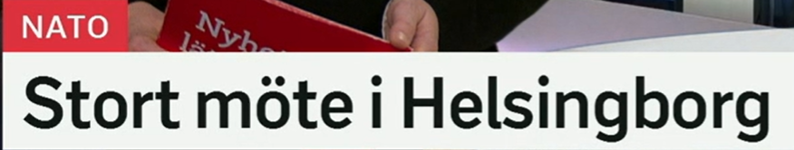
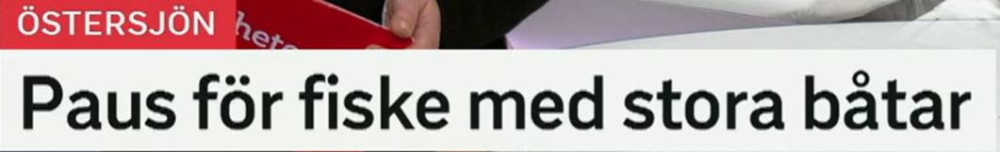
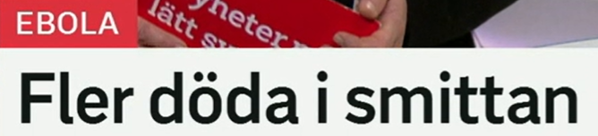
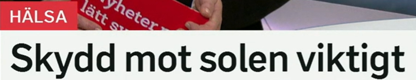
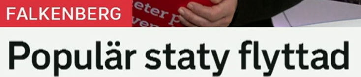

Stort möte i Helsingborg
赫尔辛堡举行大型会议。
stor 是“大”的基本形；修饰 ett 词时变 stort，如 ett stort möte。复数/定形是 stora。
Det är ett stort problem. 这是一个大问题。
ett möte 会议、会面；动词 möta 见面、迎接。相关词：ministermöte 部长会议，toppmöte 峰会，deltagare 参与者。
Mötet börjar klockan nio. 会议九点开始。
城市前表示“在”通常用 i：i Stockholm、i Göteborg。表示“去往”则用 till。
Ministern är i Helsingborg i dag. 部长今天在赫尔辛堡。
标题省略
完整句可以是：Ett stort möte hålls i Helsingborg. 标题省略动词，只保留“什么 + 哪里”。

Paus för fiske med stora båtar
大型船只捕鱼暂停。
en paus 暂停、休息。动词 pausa 暂停。搭配：ta en paus 休息一下，paus i arbetet 工作暂停。
Förhandlingarna tar en paus. 谈判暂停。
för 在这里可理解为“针对/对于”。ett fiske 捕鱼、渔业；fiska 捕鱼，fiskare 渔民，fiskekvot 捕鱼配额。
Det blir nya regler för fiske i Östersjön. 波罗的海捕鱼将有新规则。
en båt 船；复数 båtar。stora 是 stor 的复数形。更正式的“船舶”是 fartyg。
De fiskar med små båtar nära kusten. 他们用小船在海岸附近捕鱼。
名词化表达
Paus för X = X 暂停。新闻标题常这样压缩，例如 paus för bygget 工程暂停。

Fler döda i smittan
感染中死亡人数增加。
fler 表示“更多的”，用于可数名词。对比 mer，常用于不可数或抽象量：mer vatten 更多水，fler personer 更多人。
Fler patienter behöver vård. 更多病人需要医疗护理。
död 死亡的；复数/定形 döda。在标题里 fler döda 可理解为“更多死者”。动词 dö 死亡，名词 dödsfall 死亡病例。
Antalet dödsfall har ökat. 死亡病例数量已经增加。
en smitta 感染、传染。相关词：smittad 被感染的，smitta sprids 感染传播，smittspridning 传染扩散。
Smittan sprids snabbt i området. 感染在该地区迅速传播。
省略完整句
Fler döda i smittan 可以扩展为：Fler personer har dött i smittan. 标题省略了动词和 personer。

Skydd mot solen viktigt
防晒很重要。
ett skydd 保护、防护；动词 skydda 保护。相关词：solskydd 防晒，skyddskläder 防护服，skydda huden 保护皮肤。
Barn behöver bra solskydd. 儿童需要好的防晒保护。
mot 表示“抵御、对抗、朝向”。健康语境中很常见：skydd mot sjukdomar 预防疾病，vaccin mot virus 抗病毒疫苗。
Vaccinet ger skydd mot smittan. 疫苗提供对感染的保护。
viktig 重要的；修饰 ett 词或作抽象判断时常用 viktigt。名词 vikt 在这个词族里是“重要性”。
Det är viktigt att dricka vatten. 喝水很重要。
判断句省略
完整句是：Skydd mot solen är viktigt. 新闻标题常省略 är，直接把判断结果放在最后。

Populär staty flyttad
受欢迎的雕像被搬走/搬迁。
表示“受欢迎的、流行的”。变化：populärt 中性，populära 复数/定形。相关词：popularitet 人气。
Parken är populär bland barnfamiljer. 这个公园很受有孩子的家庭欢迎。
en staty 雕像。相关词：skulptur 雕塑，konstverk 艺术品，torg 广场，placering 放置位置。
Statyn står på torget. 雕像立在广场上。
来自动词 flytta 搬、移动。flyttad 表示“被搬迁的”。相关词：flytt 搬家/迁移，flyttbar 可移动的。
Bänken är flyttad till parken. 长椅被搬到了公园。
被动结果标题
Populär staty flyttad 省略了 har blivit 或 är。完整可说：En populär staty har flyttats.
复习表：从标题词扩到词汇组
| 关键词 | 延伸词汇 | 记忆角度 |
|---|---|---|
| stor | stort, stora, större, störst, stort möte | 形容词变形 |
| fiske | fiska, fiskare, fiskekvot, båt, fartyg | 渔业与船只 |
| smitta | smittad, smittspridning, dödsfall, vård | 传染与疫情 |
| skydd mot | skydda, solskydd, skydd mot sjukdomar, vaccin mot | 防护搭配 |
| viktig | viktigt, viktiga, viktigare, viktigast | 重要性表达 |
| flytta | flyttad, flyttas, flyttbar, flytt | 移动与搬迁 |
练习 1
把“一个大型会议”译成瑞典语。提示：ett stort möte
练习 2
用 paus för 写“工程暂停”。提示：paus för bygget
练习 3
把“防晒很重要”补成完整句。提示：Skydd mot solen är...
练习 4
说“雕像被搬到了广场”。提示：Statyn har flyttats till torget.